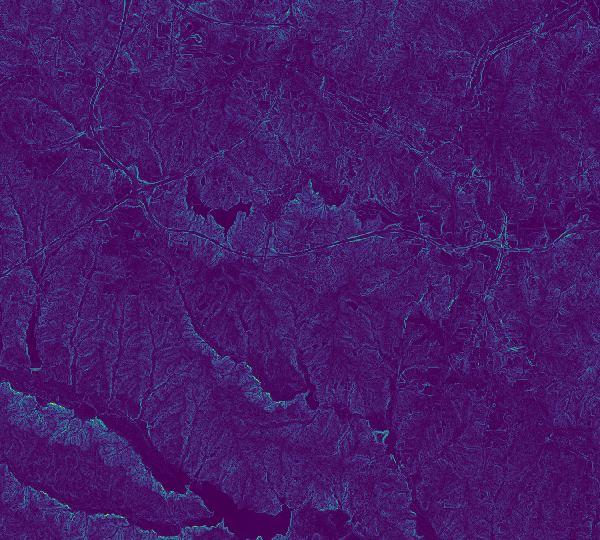
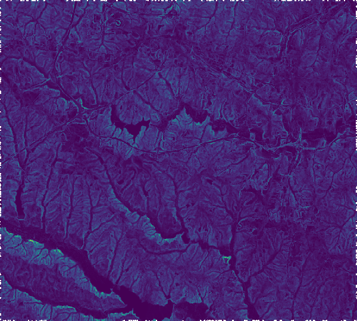
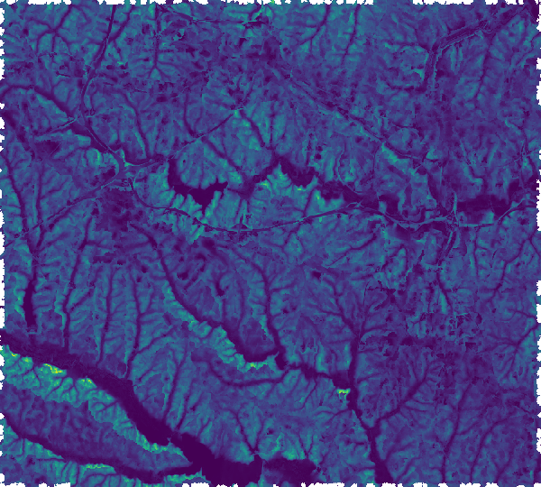
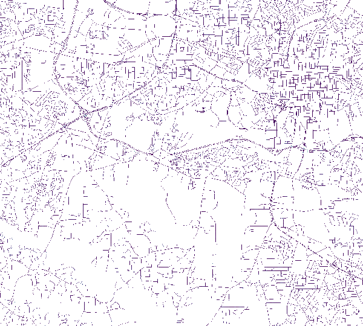
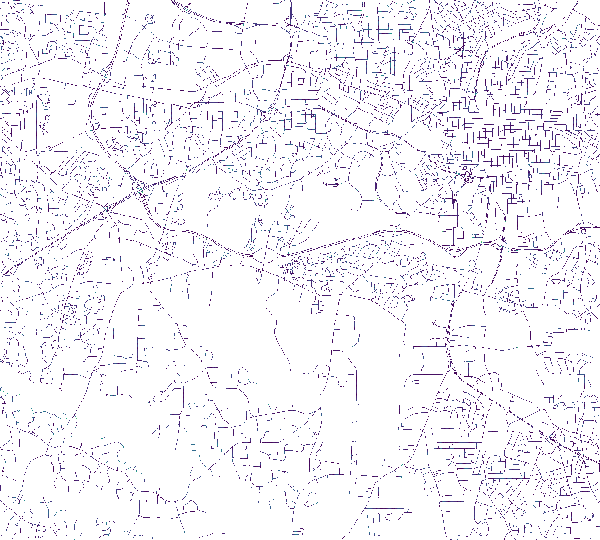
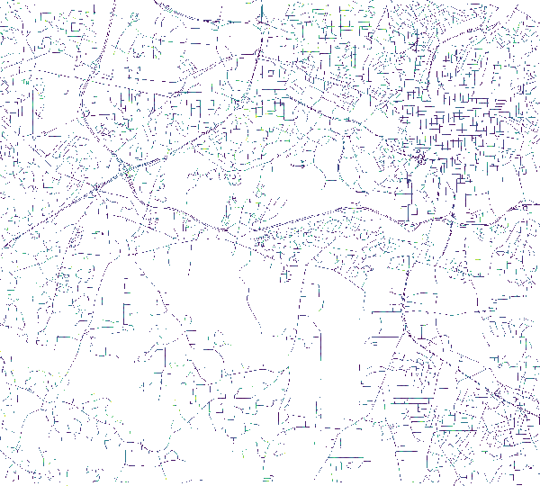

Difference in altitude to the neighboring cell in the given direction is measured and divided by the distance (determined by north south and east west resolution of the computational region). With the steps paramter the user can define how many steps along the direction map the algorithm should perform. For each step a temporary raster map is created. Thus, processing time is - in addition to the computational region - mainly determined by the maximum steps value. Multiple neighboorhoods can be given in order to produce slope measures at different spatial scales.
The slope_measure option defines the format in which slope is reported. Possible values areThe a-flag allows to compute slope as absolute elevation differences.
# Set the computational region g.region -p raster=elevation # Convert street network to raster and assign pixels direction value r.watershed elevation=elevation accumulation=faccum drainage=fdir r.slope.direction --o --v elevation=elevation direction=fdir \ steps=1,5,13 output=fdir_slope_1,fdir_slope_5,fdir_slope_13 \ method=total_gradient format=percent scale=3 type=CELL
|  |  |  |
| Slope following flow direction for 1 pixel. | Slope following flow direction for 5 pixels. | Slope following flow direction for 13 pixels. |
# Set the computational region
g.region -p raster=elevation
# Convert street network to raster and assign pixels direction value
v.to.rast input=streets_wake type=line output=streets_wake use=dir
# Directions output from v.to.rast needs to be adjusted so that:
# - direction information is coded a steps to neighboring cells
# - direction information always points to next pixel on the line
# (only end pixels of a line should point to NULL cells)
# Deinfe variables
in_dir=streets_wake
tmp_dir=streets_wake_45
out_dir=newdir
# Recode direction information
r.mapcalc --o expression="${tmp_dir}=if(int(round(${in_dir}/45.0))==0,8, \
int(round(${in_dir}/45.0)))"
# Make sure that direction points to next non-NULL cell in network
r.mapcalc --o expression="
${out_dir}=if(${in_dir}==8,if(isnull(${in_dir}[0,1]), \
if(isnull(${in_dir}[-1,1]), \
if(isnull(${in_dir}[1,1]), \
if(isnull(${in_dir}[-1,0]), \
if(isnull(${in_dir}[1,0]),8,6),2),7),1),8) \
,if(${in_dir}==7,if(isnull(${in_dir}[1,1]), \
if(isnull(${in_dir}[0,1]), \
if(isnull(${in_dir}[1,0]), \
if(isnull(${in_dir}[-1,1]), \
if(isnull(${in_dir}[1,-1]),7,5),1),6),8),7) \
,if(${in_dir}==6,if(isnull(${in_dir}[1,0]), \
if(isnull(${in_dir}[1,1]), \
if(isnull(${in_dir}[1,-1]), \
if(isnull(${in_dir}[0,1]), \
if(isnull(${in_dir}[0,-1]),6,4),8),5),7),6) \
,if(${in_dir}==5,if(isnull(${in_dir}[1,-1]), \
if(isnull(${in_dir}[1,0]), \
if(isnull(${in_dir}[0,-1]), \
if(isnull(${in_dir}[1,1]), \
if(isnull(${in_dir}[-1,-1]),5,4),7),4),6),5) \
,if(${in_dir}==4,if(isnull(${in_dir}[0,-1]), \
if(isnull(${in_dir}[1,-1]), \
if(isnull(${in_dir}[-1,-1]), \
if(isnull(${in_dir}[1,0]), \
if(isnull(${in_dir}[-1,0]),4,3),6),3),5),4) \
,if(${in_dir}==3,if(isnull(${in_dir}[-1,-1]), \
if(isnull(${in_dir}[0,-1]), \
if(isnull(${in_dir}[-1,0]), \
if(isnull(${in_dir}[1,-1]), \
if(isnull(${in_dir}[-1,-1]),1,3),5),2),4),3) \
,if(${in_dir}==2,if(isnull(${in_dir}[-1,0]), \
if(isnull(${in_dir}[-1,-1]), \
if(isnull(${in_dir}[-1,1]), \
if(isnull(${in_dir}[0,-1]), \
if(isnull(${in_dir}[0,1]),2,8),4),1),3),2) \
,if(${in_dir}==1,if(isnull(${in_dir}[-1,1]), \
if(isnull(${in_dir}[-1,0]), \
if(isnull(${in_dir}[0,1]), \
if(isnull(${in_dir}[-1,-1]), \
if(isnull(${in_dir}[1,1]),1,7),3),8),2),1) \
,null()))))))))"
# Compute slope of the streets for three
# different step-sizes (step)
r.slope.direction -a elevation=elevation \
direction=streets_wake_dir45 steps=1,5,13 \
outputs=streets_wake_slope_1,streets_wake_slope_5,streets_wake_slope_13
|  |  |  |
| Slope following street direction for 1 pixel. | Slope following street direction for 5 pixels. | Slope following street direction for 13 pixels. |
{kind=link}
{kind=link}
{kind=link}
{kind=link}
{kind=link}
{kind=link}